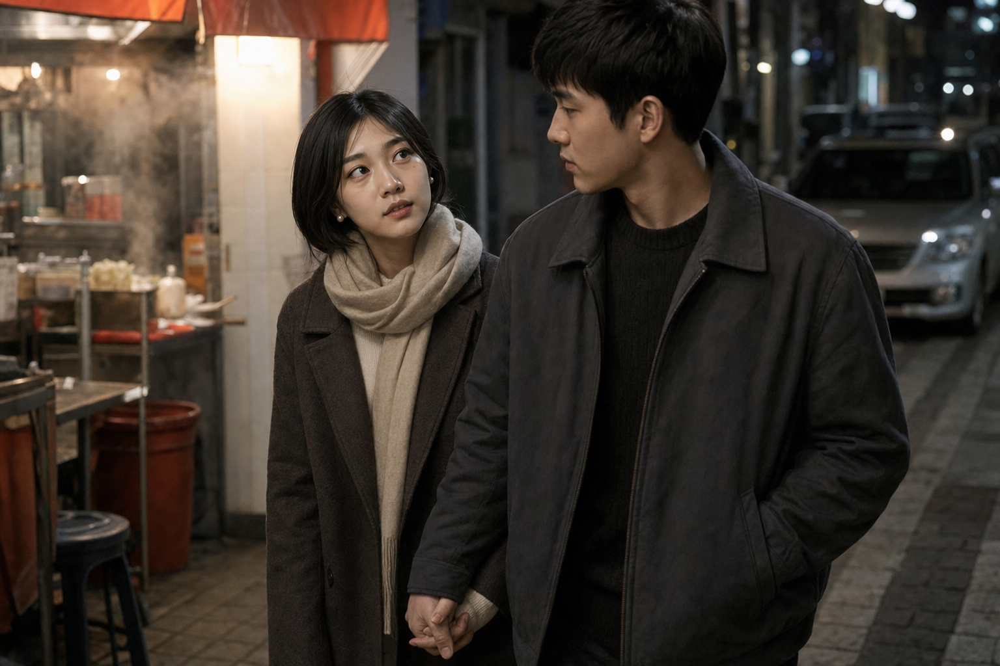

160. 헤어진 거라고 생각해
2월 7일 아침, 용식은 서윤에게 먼저 문자를 보냈다.
전송 버튼을 누르는 손은 어제보다 덜 망설였다. 사귀기로 했다는 사실은 이상하게 생활을 빠르게 바꿨다. 아침에 연락해야 한다는 의무가 생겼고, 그 의무가 싫지 않았다. 오히려 정해진 자리가 생긴 것 같았다. 그는 이불 속에서 답장을 기다렸다.
서윤의 답은 금방 왔다.
그 문장을 보는 순간, 용식은 웃었다. 아주 짧게, 혼자. 그러다 곧 얼굴이 굳었다. 사귀는 거 맞네요. 맞았다. 그런데 맞으면 안 되는 것들이 아직 너무 많았다.
폴더폰이 다시 울렸다.
이번엔 초연이었다.
문장을 읽는 순간, 방 안 공기가 차가워졌다.
용식은 침대에 앉았다. 손끝이 갑자기 무거워졌다. 초연은 몰랐다. 서윤과 사귀기로 했다는 걸 모른다. 초연은 그저 며칠째 미뤄지고, 피하고, 개강 전에 보자던 약속조차 날짜가 잡히지 않는 상태를 견디다 결국 가장 직접적인 문장을 보낸 것이다.
너 나랑 헤어진 거라고 생각해?
그 질문은 관계의 문턱에 서 있었다. 예라고 하면 끝이었다. 아니라고 하면 서윤에게 한 말이 바로 무너졌다. 그는 어느 쪽도 누르지 못했다.
서윤에게 다시 문자가 왔다.
두 문장이 같은 화면 안에서 번갈아 떴다. 하나는 아직 끝나지 않은 사람의 질문이고, 하나는 오늘부터 시작된 사람의 약속이었다.
용식은 먼저 서윤에게 답했다.
그 다음 초연의 문자창을 열었다. 커서가 깜빡였다. 그는 오래 보다가 썼다.
전송.
보내고 나서 바로 후회가 왔다. 잘 모르겠어. 그것은 대답이 아니었다. 그런데 대답이 아니어서 골랐다. 초연은 그걸 알 것이다. 모른다고 하는 게 결국 피하는 거라는 걸.
답장은 한동안 오지 않았다.
그 침묵 속에서 용식은 하루를 보냈다. 밥을 먹고, 차를 닦고, 일본어 교재를 펼쳤다. 글자는 눈에 들어오지 않았다. 그는 서윤에게 보낼 저녁 약속 문자를 몇 번 확인했고, 초연에게서 답이 없는 화면도 몇 번 확인했다. 어느 순간 자신이 누구의 답을 더 기다리는지 헷갈렸다. 아니, 사실은 헷갈리지 않았다.
저녁에 서윤을 만난 곳은 수원역 근처 작은 분식집이었다. 서윤은 들어오자마자 두리번거리지 않고 바로 용식 맞은편에 앉았다. 어제와 달리 표정이 조금 부드러웠다. 사귀기로 한 다음 날의 어색함과 기쁨이 얼굴에 같이 있었다.
[한서윤] "먼저 와 있었네요."
[김용식] "네."
[한서윤] "좋다."
그 말이 너무 순하게 들려서 용식은 가슴 한쪽이 찔렸다. 서윤은 메뉴판을 보며 라볶이를 고르고, 오뎅 국물을 하나 더 시켰다. 평범한 데이트 같았다. 평범해 보일수록 초연의 문자가 더 선명해졌다.
[한서윤] "왜 그렇게 봐요?"
[김용식] "아니에요."
[한서윤] "오늘 표정 이상한데."
[김용식] "좀 피곤해서요."
거짓말은 작은 곳에서도 나왔다. 그는 이제 피곤하다는 말 뒤에 너무 많은 걸 숨기고 있었다.
음식이 나왔다. 라볶이 냄새와 뜨거운 국물 김이 테이블 위로 올라왔다. 서윤은 젓가락을 들다가 문득 말했다.
[한서윤] "우리 사귀는 거, 후회하는 거 아니죠?"
젓가락이 손에서 미끄러질 뻔했다.
[김용식] "아니에요."
[한서윤] "진짜요?"
[김용식] "후회 안 해요."
서윤은 그 말을 듣고도 바로 웃지 않았다.
[한서윤] "어제 내가 너무 밀어붙였나 싶어서요."
[김용식] "아니에요."
[한서윤] "용식 씨는 내가 세게 말하면 대답하고, 내가 가만히 있으면 또 흐려질 사람 같아서."
[김용식] "안 흐려질게요."
[한서윤] "말은 잘해요."
그녀가 조금 웃었다. 용식도 따라 웃으려 했지만, 입가가 어색했다. 서윤은 그걸 봤다.
[한서윤] "무슨 일 있어요?"
용식은 물컵을 잡았다.
[김용식] "아니요."
[한서윤] "초연 씨?"
이름이 나오자마자 용식은 시선을 피했다. 서윤은 젓가락을 내려놓았다.
[한서윤] "말해도 돼요."
[김용식] "그냥, 완전히 좋은 마무리는 아니니까요."
서윤은 입술을 다물었다. 그녀는 초연과 끝났다는 말을 들은 사람으로서, 이제 그 이별의 후유증 정도를 상상하고 있었다. 최신 문자의 질문은 몰랐다. 모르기 때문에 믿을 수 있었다.
[한서윤] "힘들면 힘들다고 말해요. 대신 나한테 거짓말은 하지 말고."
용식은 고개를 끄덕였다.
[김용식] "네."
거짓말은 이미 하고 있었다.
그 사실이 너무 가까워서, 용식은 라볶이 맛을 거의 느끼지 못했다. 서윤은 일부러 분위기를 밝게 만들려고 했다. 학원 선생이 오늘 발음을 이상하게 잡아냈다는 얘기, 설 연휴에 집에서 잔소리를 들었다는 얘기, 도쿄에서 먹었던 편의점 푸딩이 생각났다는 얘기. 용식은 고개를 끄덕이고, 웃고, 맞장구쳤다. 겉으로는 데이트였다.
분식집을 나와 차까지 걸을 때, 서윤이 먼저 손을 잡았다.
[한서윤] "오늘은 주변 안 보네요."
[김용식] "보지 말라면서요."
[한서윤] "말 잘 듣네."
[김용식] "들어야죠."
[한서윤] "여자친구 말이니까?"
용식은 잠깐 멈췄다. 서윤도 멈췄다. 그녀는 장난처럼 말했지만, 눈은 장난이 아니었다. 그 단어를 듣고 싶어 했다.
[김용식] "네. 여자친구 말이니까."
서윤의 얼굴이 확 풀리지는 않았다. 대신 아주 천천히, 눈가가 따뜻해졌다. 그녀는 잡은 손에 힘을 줬다.

[한서윤] "다시 말해요."
[김용식] "서윤 씨가 제 여자친구니까요."
말하고 나서, 용식은 심장이 이상하게 뛰었다. 서윤은 고개를 숙였다. 목도리 위로 볼이 조금 붉었다.
[한서윤] "그 말 좋네요."
좋다고 했다.
용식은 그 말을 들으며 초연의 아침 문자를 떠올렸다. 너 나랑 헤어진 거라고 생각해? 그 질문에는 아무런 좋은 말도 답하지 못했는데, 서윤에게는 여자친구라는 말을 했다.
차 안에서 서윤은 조수석에 앉아 안전벨트를 맸다. 예전과 같은 자리였지만 느낌이 달랐다. 이제 그녀는 숨겨진 동승자가 아니라 여자친구라고 불린 사람이었다. 적어도 둘 사이에서는.
폴더폰이 진동했다.
용식은 컵홀더에 놓인 화면을 봤다. 초연.
용식은 화면을 닫았다.
서윤이 물었다.
[한서윤] "누구예요?"
그 질문은 의심이라기보다 자연스러운 관심이었다. 여자친구로서 묻는 말. 용식은 아주 짧게 망설였다.
[김용식] "집에서요."
서윤은 고개를 끄덕였다. 더 묻지 않았다. 믿었다. 그 믿음이 차 안에 조용히 놓였다.
용식은 시동을 걸었다. 히터가 늦게 따뜻해지기 시작했다. 서윤은 손을 뻗어 그의 손등을 한 번 눌렀다.
[한서윤] "오늘 너무 무거워 보이면, 나 불안해져요."
[김용식] "미안해요."
[한서윤] "사과 말고."
[김용식] "후회 안 해요."
서윤은 그제야 작게 웃었다.
그날 밤 서윤을 내려 주고 돌아오는 길, 용식은 차를 잠깐 갓길에 세웠다. 초연에게 답해야 했다. 그는 폴더폰을 열었다. 화면에는 초연의 문자가 그대로 있었다.
용식은 오래 고민하다가 짧게 썼다.
전송하지 못했다. 지웠다.
그것도 지웠다.
결국 그는 아무것도 보내지 않았다.
시동을 다시 걸었다. 집으로 가는 길은 조용했다. 차 안에는 서윤에게 한 말이 남아 있었다.
여자친구.
그 단어가 달콤할수록, 초연의 질문은 더 오래 지워지지 않았다.